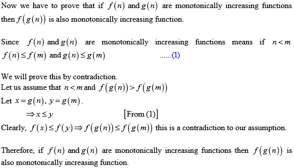
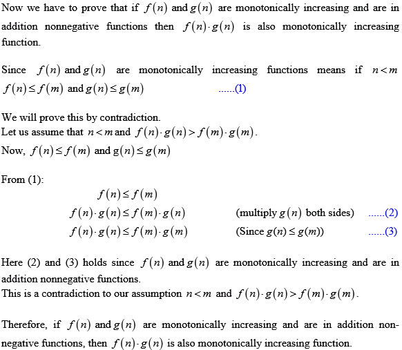
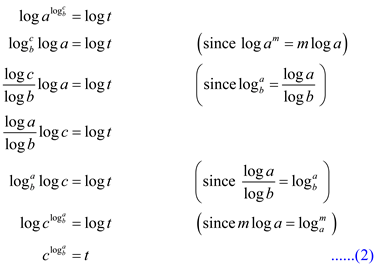
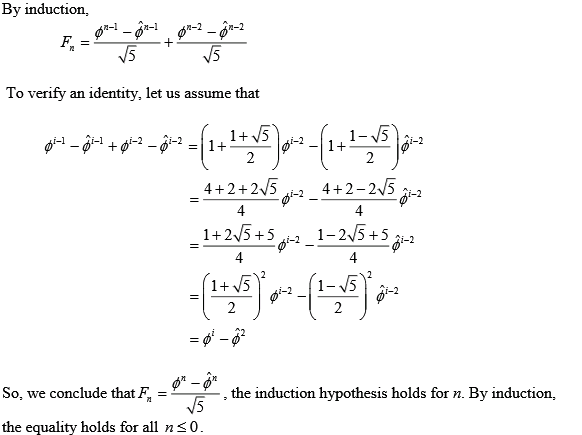
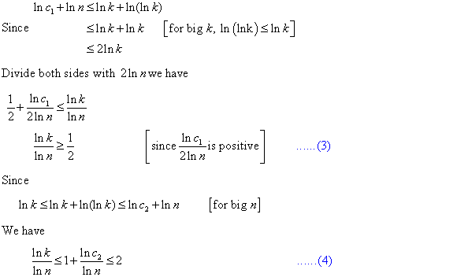

The equation to be proved is.
Proof is shown below:
Consider the left side of the equation as t.
Then
Apply log on both sides.
Then,

From equations (1) and (2) .
Hence, proved that.
Consider the equation:
The above equation can be proved by using Stirling’s approximation:
The Stirling’s equation holds for all  and
.
and
.
Apply logarithm on both sides of the above equation.
Then
Therefore,
Consider the equation:
The above equation can be proved using the following definition.
If , then . Where a and b are real constants and a >1.
Apply the above limit theorem on n! and nn .
Since, , it can be concluded that
Consider the given equation:
From the definition of  - notation,
if f(n) =(g(n)),
then .
- notation,
if f(n) =(g(n)),
then .
Therefore, prove that to show that.
Thus,
Here, n n grows rapidly
compared to (2 e ) n as
n approaches  .
Thus, it can be written symbolically that
or
.
.
Thus, it can be written symbolically that
or
.
A function is polynomially bounded if for some constant.
A function is polynomially bounded is equivalent to proving that
for the following reasons:
1. If is polynomially bounded, then there exist constants such that
for all , .
Hence, where c and k are constants
2. Similarly, if, then f (n) is polynomially bounded.
The essential proofs are
The equation can be proved by using Stirling’s approximation:
The equation holds for all
Apply log both sides then


If a function is polynomially bounded, its log is log bounded. We can also observe that
Since
Hence,
Therefore, .
So,
The function is not polynomially bounded.
The given polynomial function is
Any polylogarithmic function grows more slowly than any positive polynomial function, i.e., that for constants
Substitute
Therefore,
So, the function is polynomially bounded.
The definition for the iterated function is as follows:
The equation or can be written as follows:
or
Consider that the . Therefore, .
And thus, by applying logarithm the number of iterations will be reduced by 1. Therefore, it is written as .
Hence, asymptotically .
Thus, comparing to , is asymptotically larger.

